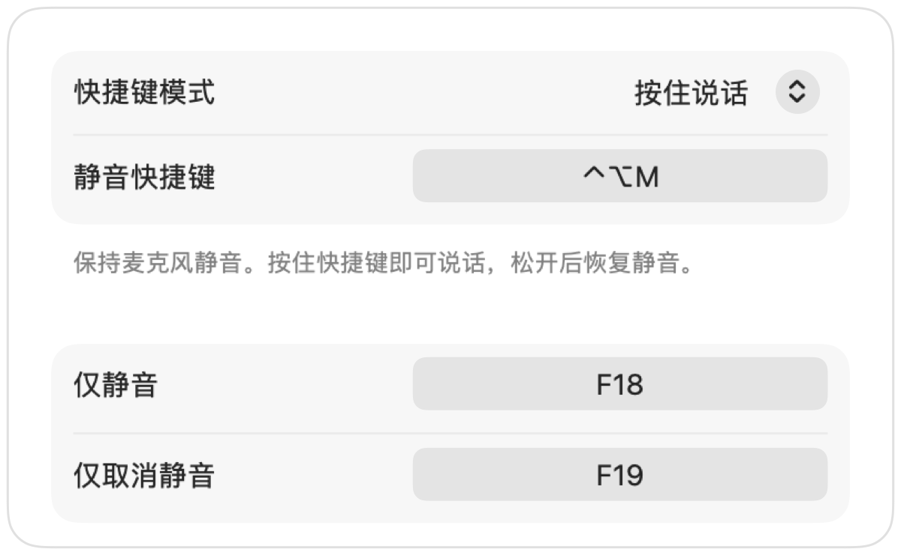

Mac 全局按住说话，适用于所有 App
按住说话功能会让你保持静音，直到按住按键才开启话筒。这是在大型会议或嘈杂环境中保持安静最简单的方式，但目前支持此功能的 App 寥寥无几，且各自的快捷键各不相同。
Muffle 可为 Mac 上的所有 App 添加按住说话功能。只需在设置中选择“按住说话”，按住快捷键即可说话，松开后恢复静音。
使用按住说话功能
- 1
安装 Muffle。
- 2
在 Muffle 设置中，将“快捷键模式”设为“按住说话”。
- 3
说话时按住 Control-Option-M。
- 4
松开按键，麦克风将再次静音。

- 更喜欢使用单个按键？可以在设置中指定“说话键”：右 ⌥、fn 或额外的鼠标按键均可。
- 在 Muffle 设置中挑一个顺手的快捷键，例如某个 F 功能键。
常见问题
按住说话功能适用于 Google Meet 吗？
适用。Muffle 会直接将麦克风本身静音，因此按住说话功能在 Meet、Zoom、Teams、Discord 及任何其他 App 中都能正常工作。
是否支持按住静音？
支持。选择“按住静音”，即可按住快捷键暂时静音，如同静音咳嗽键一样。